Tissue culture for clean cannabis genetics
Tissue culture removes diseases that usual methods to clean a plant cannot remove. It makes a new plant from a very small piece of the tip of a shoot. When you read this guide, you will know how to do the full procedure. The procedure starts when you prepare the donor plant. It ends with a mother plant that can supply cuttings. A test shows that this mother plant has no disease.
Purpose and scope
This guide shows you the full procedure, from the selection of a donor plant to a clean new mother plant. The new mother plant has roots, and it is in good condition after acclimatization. You will know the definition of plant tissue culture. You will know that cannabis growers use it to make their genetics clean. You will also know how to do all the steps of the procedure.
This guide is for a person who is new to laboratory work. The guide gives the definition of each term the first time that the term occurs. It gives all the necessary information. If the data are not sufficient, or if the manufacturer of a product does not give the information, the guide tells you clearly.
Tissue culture makes a new plant from a very small piece of the tip of a shoot. This tip is too new to contain most diseases. Thus the new plant is clean, also when the parent plant has a disease.
How to use this guide
Cannabis is a recalcitrant species: its tissue does not easily make a new plant in a vessel. In your first batch, contamination or browning can kill most of the cultures. This result is usual. It does not show an error in your work.
The best report from a laboratory shows that approximately 55% of the pieces stay in good condition. Other reports show that 90 to 95% of the pieces do not stay in good condition at the first stage. Use your first batch as a test of your method.
Evidence and limitations
We want each paper to be correct. Thus we examine each paper for information that is not solid. This information comes from the view of one grower, from a small number of sources, or from grower methods that have no controlled test. We identify this information, and we do not show it as solid.
Frequently there is no paper for the decision that you must make. Then we use the reports of other growers and the methods that work in the rooms that we know. This information can help you, but it is not the result of a laboratory test. Use the methods that work for your plants, for your room and for your meters. If a table does not agree with your crop, use the data from your crop and record the difference.
- Meristem tissue frequently contains a smaller quantity of systemic pathogens than a nodal cutting contains.
- A spray cannot remove a viroid infection from a plant. After a cleanup, a plant without the viroid is not resistant to the viroid.
- RT-qPCR (RNA) is the correct type of test for HpLVd. A test with only a DNA strip is not correct.
- In the first batch of a grower who is new to the work, contamination kills many cultures. Cannabis is a recalcitrant species.
- Some months are necessary to get mother plants that tests show are clean. This time includes the indexing.
- The quality of the aseptic technique has a larger effect than the manufacturer of the kit.
- Infection rates from investigations of facilities as permanent rates for all areas. An investigation gives a rate for one time and one area.
- One percentage of seed transmission for all crosses. The percentage changes with the genotype.
- Only tissue culture, with no hygiene after it, as a permanent method to remove all endophytes, mites and surface pathogens.
If you find an error, make a report. We will correct it. Make the report on GitHub, with the name of the paper and the information that is incorrect. If you have a source, include it: Make a report of an accuracy problem. The regulations, labels and licenses of your area always override each procedure in these papers. The label weak in a paper shows the points where the risk of an error is highest.
The terms and facts of tissue culture
Tissue culture uses one fact about plants that animals do not have. Almost all the cells of a plant contain the full instructions to make a new plant.
Each cell in the plant contains a copy of all the instructions to make the plant. Most cells use only a part of the instructions. A root cell uses the instructions for roots, and a leaf cell uses the instructions for leaves.
Give a very small piece of the correct tissue the correct nutrients and signals. Then the cell can use all the instructions and make a new plant. This property is totipotency. You make a new copy of the plant, not a ‘sample’.
The table below gives the necessary terms. It is not necessary to know all the terms at this time. This guide uses each term again in the next sections.
| Term | Definition |
|---|---|
| Tissue culture (TC) | The growth of plant cells, tissues or organs in a vessel without microbes, on a gel with nutrients and not in soil. |
| Micropropagation | You use tissue culture to make many copies of a plant. The copies are the same as the first plant. In this guide, tissue culture and micropropagation are the same. |
| In vitro | The Latin term for ‘in glass’. It is for all that occurs in the vessel. The opposite terms are ex vitro and in vivo. They are for all that occurs out of the vessel. |
| Explant | The small piece of a plant that you cut from the plant and put in a vessel. This piece starts a culture. |
| Clone | A copy of a plant with the same genetics. Each plant that you make from one mother plant, by tissue culture or by cuttings, is a clone. |
| Aseptic technique | The method that prevents the entry of bacteria, fungi and yeast into your culture. This method has the largest effect on the result. |
| Medium (media) | The material that gives nutrients to the culture. It is a gel of mineral salts, sugar, vitamins and hormones. A gelling agent makes the gel hard. ‘Pouring media’ is the task to fill the vessels with the medium. |
| PGR (plant growth regulator) | A plant hormone that you add to the medium to control growth. One type makes shoots. The other type makes roots. This guide also uses ‘hormones’ as a name for PGRs. |
| Meristem | The dome of cells at the tip of each shoot. The cells divide and stay new. This tissue has the smallest quantity of disease in the plant, and it is the primary tissue of this guide. |
| Node | The point on a stem where a leaf and a bud attach. A nodal segment is a short piece of stem that contains one bud. |
| Subculture | The task to move tissue to new medium. Do this task again after some weeks. Thus the cultures stay in good condition and make more shoots. |
| Contamination | A microbe that goes into the vessel and increases in number faster than your plant. Almost always, the microbe kills that culture. |
| Indexing | A laboratory test to make sure that a plant does not have a specified disease. An example is an RT-qPCR test for a viroid. |
You do not change the DNA, and you do not make the DNA better. The cultivar stays the same cultivar. You remove the diseases and pests that the plant got during many years of cloning. Then the plant can have the performance of its initial genetics. The plant is in good condition again, and the genetics are not better.
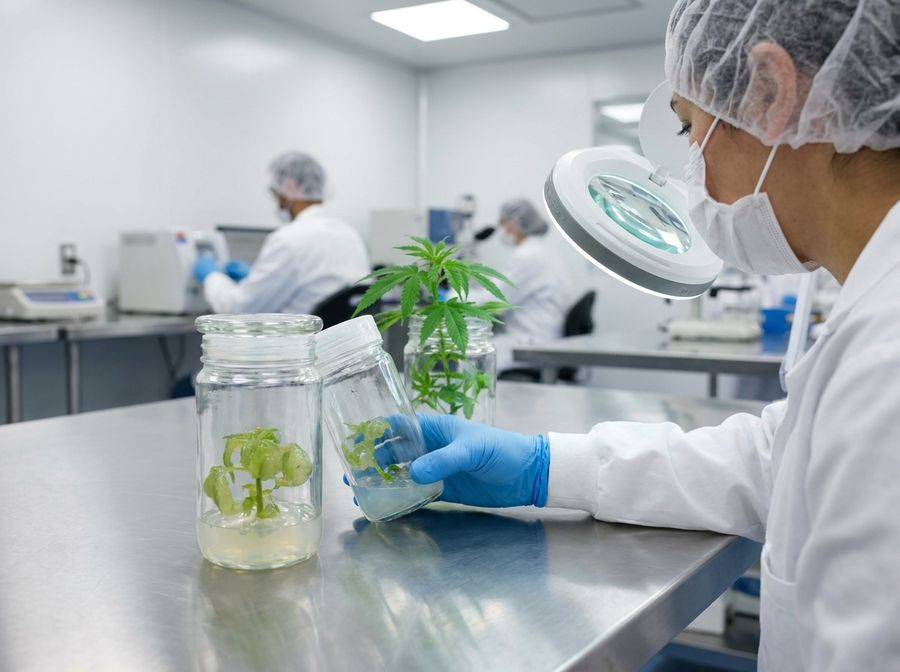
Hop latent viroid and clean-stock genetics
When you get cuttings from the same mother plant for many years, two problems occur. The first problem is diseases that you cannot see. They go from one cutting to the next cutting. The second problem is a slow increase of damage. At the start, the plant shows no problem, but then the yield decreases, the buds become smaller, and the aroma becomes weaker. In cannabis, the primary cause of these problems has a name.
HpLVd: movement, cost and effect
A spray cannot remove the viroid from a plant that has the infection. The viroid is in the cells and in the tissue through which sap flows. The only method that gives a good result is to make a new plant. Make the new plant from a piece of tissue that does not contain the viroid. Meristem tissue culture does this, and it is the primary part of this guide.
Most reports are about HpLVd. Meristem work and indexing are primarily for systemic agents (viroids and viruses). Sterilization of the surface removes many microbes and other organisms from the surface. But endophytes can occur in the culture after the sterilization, and mites stay a problem for IPM. At the start, the cells are clean. Thus it is not necessary to remove the same problems again and again.
Tissue culture procedure
Each procedure for plant tissue culture has the same five stages, for orchids, bananas and cannabis. The first record of these stages is from Murashige. Each step in the next sections is part of one of the stages.
This guide divides the five stages into the steps that you will do. The guide also includes two more steps for cannabis. The first is the meristem cleanup, which removes the viroid. The second is the indexing test, which makes sure that the cleanup removed the viroid.
Time for the procedure
The procedure is longer than you want. It is important to know this before you start. There are two correct times, for two different results.
- A clean clone with roots, after acclimatization (without a laboratory test for disease): approximately 10–15 weeks.
- A mother plant that has no HpLVd, as tests show (meristem culture and RT-qPCR tests): approximately 5–6 months or more. The procedure is much longer than two weeks.
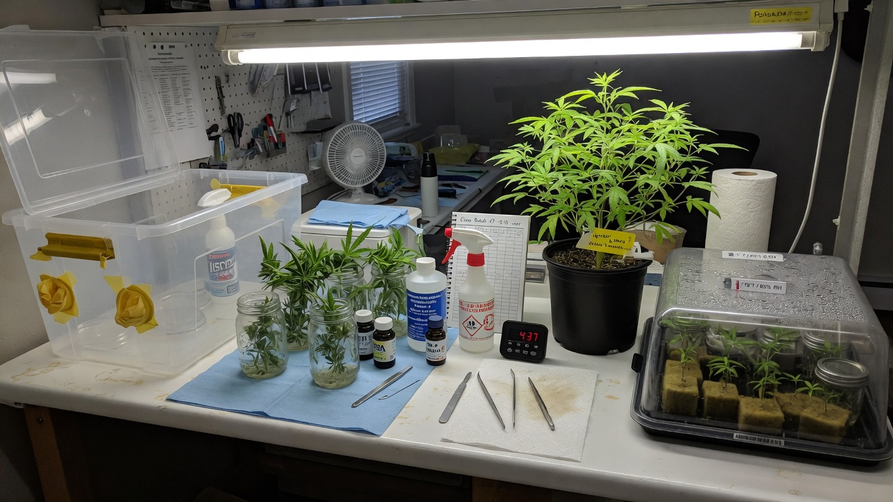
Meristem culture to remove pathogens
Viroids and viruses move in a plant through its vascular system. The vascular system is the internal tissue (phloem) through which sap flows. From there, the viroids and viruses move from cell to cell. But the meristem is at the tip of each shoot. The meristem is a dome of new cells that divide very quickly. It is too new to have a vascular system.
- No vascular tissue. The viroid moves in vascular tissue, and the dome does not have vascular tissue. Thus the pathogen cannot go into the dome.
- The cells divide faster than the viroid. Meristem cells divide faster than the viroid can make copies and move forward. Thus the newest cells of the tip stay in front of the infection.
The piece that you cut gives one of two results: a clone of the plant only, or a clean plant. When the piece is smaller and newer, it has less disease. But it is also not easy to keep the piece in good condition.
Meristem culture can make a plant without the viroid. It does not make a plant that is resistant to the viroid. A dirty blade or hand can infect a clean plant again when it touches the plant. Clean stock stays clean after the cleanup only if you always obey the hygiene procedures. A plant is clean only when a laboratory test shows that the plant has no viroid (section 13).
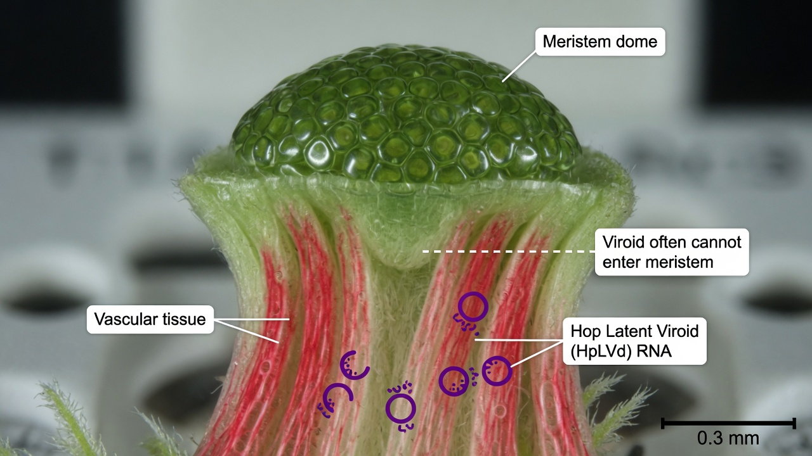
Laboratory setup and equipment
It is not necessary to have a special laboratory. Three items are necessary. The first is a small space of clean air for your work. The second is a method to sterilize objects with heat. The third is a warm area with light for the vessels. This section gives all the information.
Clean air: still-air box or flow hood
A still-air box is a transparent plastic container on its side, with two holes for your arms in the front. You clean the inner surface of the container with alcohol. When all the fans and the AC are off, the air in the box does not move. Thus spores cannot go onto your open vessels. The cost is low or zero, and we recommend that you start with this box. The box has a small space, and the movement of your arms moves the air.
A laminar flow hood is an electric cabinet. A fan blows air through a HEPA filter (the filter removes more than 99% of the particles). The air flows in one smooth layer across your work and removes contaminants all the time. The hood has a larger space, the work is faster, and an error has less effect. The hood is a better alternative, but it is not necessary. The Athena kit includes a hood of this type.
A biosafety cabinet gives the operator protection against dangerous microbes. In plant tissue culture, you must give protection only to the plant. Thus a flow hood or a still-air box is the correct tool. A biosafety cabinet has a high cost and is more than necessary.
The Athena Culture Kit: contents and limits
Athena Ag is the manufacturer of the ‘Pro Line’ nutrients, which many growers use. Athena Ag supplies a tissue culture kit for a bench, with all the items in one set. The kit is for growers who are new to laboratory work. It puts the items that have a high cost and that are not easy to get in one toolbox.[12]
Athena gives information about these items in the kit:
- A laminar flow hood that you can move easily (H13 True HEPA filter, airflow 0.5–0.9 m/s, work zone of approximately 2.58 ft³).
- A small one-touch autoclave (pressure sterilizer) for media and tools.
- A toolbox with a scalpel, forceps and the procedure, step by step, on the inner side of the lid.
- Two media in sachets. You only add water. SHOOTS (blue) is for the multiplication of shoots. ROOTS is for callus, the growth of roots and new mother plants.
- A sanitizer with hypochlorous acid that is safe for plants (Cleanse) and bleach. You use these two to sterilize the surface of the explant.
- The kit has sufficient material to prepare a maximum of approximately 120 culture vessels. You can get media, vessels and filters as refills.
- The information about the basal salts of the media is not available. Athena does not tell you if ROOTS and SHOOTS use MS, DKW or a special mixture. Athena also does not tell you the hormones, or the dose of each hormone. You cannot adjust a medium or find the cause of a problem if you do not know the components.
- No disease test. The kit lets you cut the meristem. But it has no RT-qPCR test and no equipment for thermotherapy. Thus the kit cannot show that a plant has no HpLVd. Make sure that your costs include tests in an external laboratory (section 13).
- The cost changes with the supplier and with the date: it is approximately $1,800–$2,295. Refills (media $30–$40 for each box, vessels $15 for each vessel, HEPA $100) increase the total cost with time.
A DIY equivalent has a cost of approximately $200–$550 for the start. It includes a still-air box, a pressure cooker for $60 as the autoclave, MS media powder, agar and bleach. The kit gives a set that is easy to use, and a flow hood. It does not give a different result. When this guide gives a recipe, it gives the DIY method and the method for the Athena sachet.
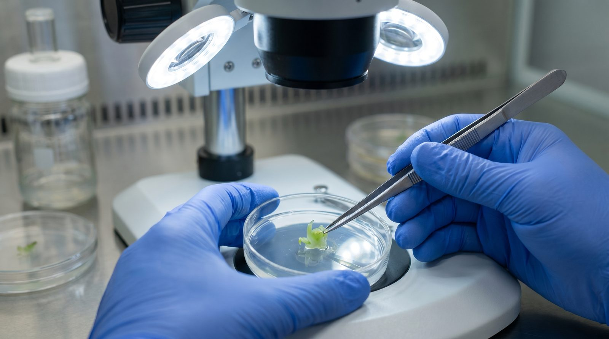
Aseptic technique
Aseptic technique is the most important method of tissue culture. Make sure that you know it correctly. Ninety percent of the unsatisfactory results of growers who are new to the work are because of contamination. Contamination is a problem of method. It is not a random problem.
Aseptic technique is the method to keep microbes out of your vessel. Microbes are on your skin, in your breath, in the air and on all surfaces. Your medium is a gel with sugar and nutrients, and microbes can use it to increase in number. Your task is to prevent the entry of microbes.
The four types of contamination and how to find them
The procedure for aseptic technique, each time
- 1Clean the work areaClean the inner surfaces of the box or hood, and the bench, with 70% alcohol. Let the alcohol dry. If you use a still-air box, make sure that the fans and the AC are off.
- 2Put on gloves and sprayPut on new nitrile gloves. Then spray 70% alcohol on the gloves. Spray again each time that you touch an item out of the clean area.
- 3Only the necessary itemsPut only the vessels, the tools and the explants for this task in the work area. More items cause more risk of contamination.
- 4Sterilize the tools before each cutPut the scalpel and the forceps in alcohol momentarily. Then move them through a flame. Or use a glass-bead sterilizer (approximately 250 °C / 482 °F for approximately 20 seconds). Then let the tools become cool. A hot tool burns the tissue when it touches the tissue.
- 5Open the vessels for a short timeOpen a vessel only when you use it. Close the vessel immediately after you complete the task. Do not let a vessel stay open.
- 6Do not put your hands above open vesselsIf you put your hand above an open vessel, particles of skin and spores go into the vessel. Always move your hand to the vessel from the side.
If you use alcohol and a flame, keep the open container of alcohol far from the flame. Do not put a flame above the container of alcohol. A glass-bead sterilizer removes the risk of an open flame. It is the safer alternative in a plastic still-air box.
Fill the vessels with new medium, or start new cultures. Then keep the vessels in the culture room for approximately 7 days. Do not use the cultures, and do not add more material, before the end of this time. Contamination shows in this time, also the slow latent type. The cost to discard one vessel is much less than the cost of a batch that has a microbe that you did not find.
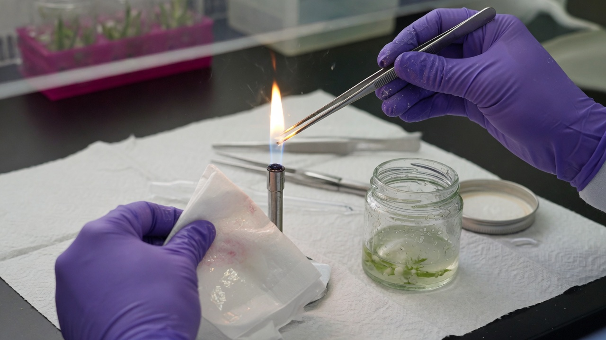
Make and sterilize the medium
The medium is the gel that holds your plant. The minimum medium contains mineral salts (nutrients for the plant), sugar, vitamins, hormones (optional) and a gelling agent that makes the medium solid. The sugar gives energy because the light in a sealed vessel is too dim for the plant to make sufficient sugar. You dissolve all the items in distilled water or RO water, adjust the pH, and then sterilize the medium with heat.
A recipe for the start (for each 1 liter)
The recipe below gives a good DIY medium for initiation and multiplication. Many growers use it. Make it one time and you will know the contents of each sachet that you get.
| Component | Quantity for each liter | Function |
|---|---|---|
| Distilled water or RO water | Start with approximately 800 mL | The solvent. Use only distilled water or RO water, because the minerals in tap water change the recipe. |
| MS basal salts | 4.4 g | The mineral nutrition (full strength). |
| Sucrose (sugar) | 30 g (3%) | The source of energy. For a hobby grower, usual table sugar is sufficient. |
| Agar | 6–8 g | The gelling agent that makes the gel solid. When you add more agar, the gel is harder and there is less hyperhydricity (section 14). |
| myo-Inositol | 0.1 g | A sugar alcohol that the cells use for growth. |
| Activated charcoal | approximately 1 g (optional) | Activated charcoal absorbs the phenolic compounds that cannabis releases. Thus browning decreases. |
| Hormone (PGR) | Refer to the table below | The hormone causes the tissue to make shoots or roots. The hormone is optional at initiation. |
| PPM (a biocide) | 1–2 mL (optional) | More protection against microbes that stay in the medium after sterilization. |
| Add water to | 1 L. Adjust the pH to 5.6–5.8. | Set the pH BEFORE you add the agar and BEFORE you sterilize. |
First, dissolve the salts and the sugar in the water. Then adjust the pH to 5.6–5.8. To decrease the pH, add a drop of dilute acid. To increase the pH, add a drop of dilute base.
Then add the agar, and apply heat to dissolve the agar. Then put the medium in the vessels, to ⅓ of the volume of each vessel, and sterilize them. It is much less easy to adjust the pH after you add the agar.
A short list of hormones for DIY media
If you get a kit, the hormones are in the media, thus you can ignore this list. If you mix the media, this list gives the hormones for cannabis.
| Stage | Hormone (PGR) | Typical dose | Information |
|---|---|---|---|
| Initiation | meta-Topolin (mT) or TDZ | meta-topolin approximately 0.5 mg/L. TDZ 0.1–0.5 mg/L. | meta-topolin is a cytokinin with a weak effect. It starts the growth of the explant. TDZ has a strong effect: keep the dose low, or it causes callus and glassy shoots. |
| Multiplication | meta-Topolin (mT) | 0 to approximately 0.5 µM | In cannabis, a smaller dose frequently gives a better result. A medium without hormone frequently gives the best shoots and the largest number of shoots (refer to section 14). |
| Rooting | IBA (an auxin) | 2.5 µM (approximately 0.5 mg/L) | IBA is the best rooting hormone for cannabis. It gives approximately two times the number of roots of IAA or NAA. |
Sterilize the medium
Microbes can use the nutrients in a medium that you did not sterilize to increase in number. Thus you must sterilize the medium with heat before you use it. The DIY tool is a pressure cooker, and the laboratory tool is an autoclave (the Athena kit includes a small autoclave). The two tools do the same task: they hold the vessels at 121 °C (250 °F) / 15 psi for approximately 20 minutes.
Media with only MS and agar can stay in good condition for some weeks to approximately 1–2 months. Keep them in a refrigerator and in darkness. Use media that contains PPM in a maximum of approximately 1 month. Make only the quantity that you will use.
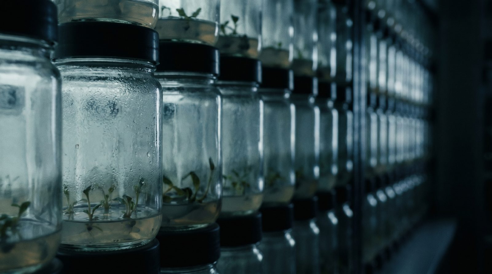
Prepare the mother plant
A donor plant in unsatisfactory condition gives cultures in unsatisfactory condition. The condition of your donor plant has the largest effect on the result: it changes if your cultures stay clean. A mother plant that is dirty, has stress or has pests causes unsatisfactory results, also when your method is correct. Some microbes are in the tissue, and bleach cannot remove them (the endophytes from section 7).
Select your best plant, with the correct traits of the cultivar. Make the plant vegetative and in good condition before you cut a piece from it.
- Keep the plant in vegetative growth, and not in the flowering stage. Use long days: 18 h of light and 6 h of darkness.
- Keep the temperature at 24–30 °C (75–86 °F) and the humidity at a moderate 55–60%.
- Apply a vegetative feed and keep the plant in soft, fast new growth. New tissue gives explants that are better and have less disease than the explants from hard stems.
- First, examine the plant for pests and disease and apply a treatment. Use only a plant that is in good condition.
- In the 1–2 weeks before you cut, keep the humidity low and do not apply water from above. Dry foliage has a much smaller number of fungi and bacteria on the surface.
- Some growers apply a systemic fungicide during this period, as a drench or as a spray. It decreases the internal load of microbes in the plant, and sterilization of the surface cannot touch these microbes.
- Cut your explants from the top nodes that are new and have their full size. Use a shoot in active growth. Do not use the soft tip or the hard bottom of the shoot.
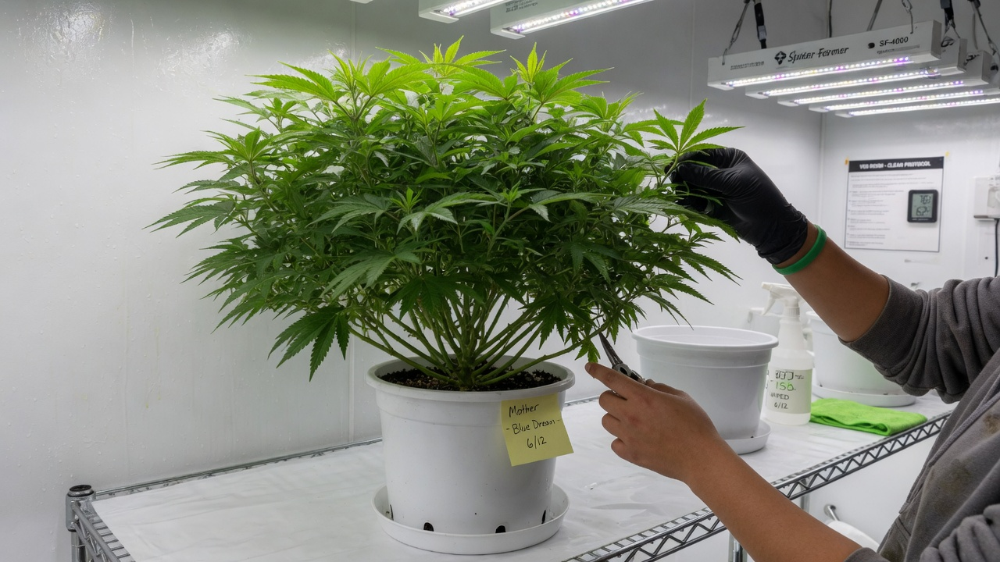
Cut and sterilize the explant
In this step, you start the work with the plant. You cut a small piece from the mother plant that you prepared, and you sterilize the surface of the piece. The sterilization kills each microbe on the outer surface, but it does not kill the plant tissue. This step has the highest risk of contamination and of unsatisfactory results. Thus do the work slowly and obey the sequence correctly.
Cut the explant
For your first batches, use a nodal segment. A nodal segment is a piece of stem that is approximately 1 cm (0.4 in) long and contains one bud. With this explant, an error has less effect. Thus you can find the problems of aseptic technique before you do the meristem dissection, which is not easy (section 12). Remove the large leaves to decrease the surface area that has microbes.
Sterilize the surface of the explant
The standard protocol for growers who are new to the work has two primary steps. The data show that this protocol gives the best results. First, put the explant in alcohol for a short time, to break the wax on the surface. Second, soak the explant in bleach to kill all the microbes. Then flush the explant fully with water. Thus no bleach stays on the explant to cause damage to the tissue.
| Step | Material | Time |
|---|---|---|
| 1. Clean | Tap water and a drop of dish soap. Move the explant carefully in the liquid. | 10–20 min |
| 2. Put in alcohol | 70% ethanol or isopropyl alcohol | 30–60 sec |
| 3. Put in bleach | 10% household bleach (1 part bleach : 9 parts water) and some drops of Tween-20 or dish soap. Mix the liquid carefully. | 15–20 min |
| 4. Flush ×3 | Distilled water that you sterilized. Use new water each time. | 3 min each |
| 5. Cut again | Cut the ends that bleach damaged, on a surface that you sterilized. | – |
| 6. Put on the medium | Put the explant on the initiation medium. Seal the vessel. | – |
Recipes use two different values for the quantity of bleach. If you use the incorrect value, you cause damage to your tissue. Household bleach contains only approximately 5–8% sodium hypochlorite (NaOCl) before you mix it with water. Thus a 10% dilution of household bleach gives only approximately 0.5–0.8% active NaOCl, and this value is correct. A report that gives ‘1% NaOCl’ shows a stronger solution. Before you mix, examine if a number is for diluted bleach or for active NaOCl.
After approximately 30 minutes in bleach, necrosis starts in the cannabis tissue. In one test, 75% of the tissue had necrosis after 45 minutes or more. If you sterilize for too short a time, there is contamination. If you sterilize for too long, the explant has necrosis and is brown. A time of 15–20 minutes is the best start point for growers who are new to the work. Adjust the time from this value.
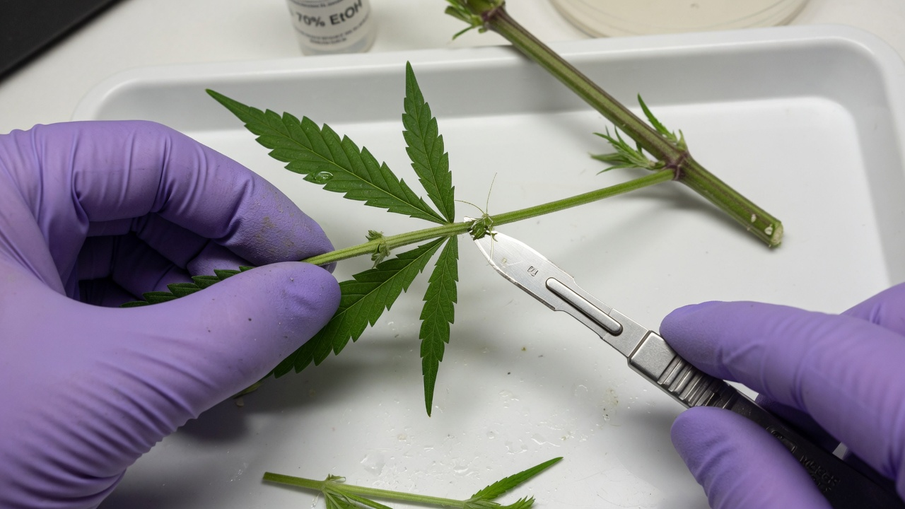
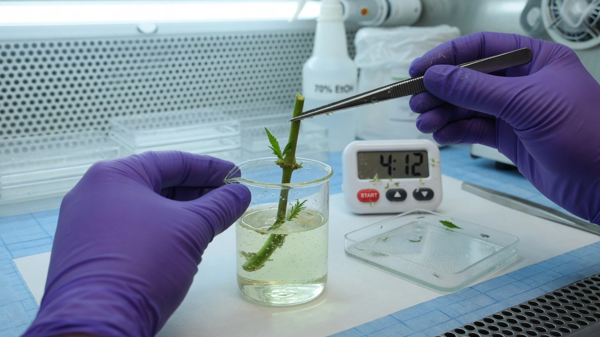
Culture initiation
‘Initiation’ is the period after you put the sterilized explant on its medium. The period also has the name ‘establishment’. In this period, the explant adapts to the medium and starts to increase in size. Your tasks in this period are two. First, monitor the cultures carefully for contamination. Second, prevent browning that kills the tissue.
- Put the vessels with explants in the culture room at approximately 25 °C (77 °F). Use 16 h of light and 8 h of darkness, with light of low intensity.
- Monitor the vessels for 7–14 days. Immediately discard a vessel with fungal growth, a medium that is not transparent, or slime. One vessel with contamination can cause contamination in the other vessels on the shelf.
- The bud usually becomes larger and makes new growth (‘bud break’) in approximately 2–3 weeks.
- Cultures that are clean and in growth go to the multiplication stage.
Cut cannabis releases phenolic compounds. The oxidation of these compounds makes the tissue, and the medium around it, brown. The oxidation can kill the tissue. To decrease browning, add activated charcoal to the medium (approximately 1 g/L). Put the explant in an antioxidant liquid for a short time. In the first two weeks, move the explant to new medium after a short time, and do this again frequently.
Initiation is the stage with the lowest survival, because cannabis is a recalcitrant species. Reports of laboratories show values for different cultivars. In the best report, approximately 55% of explants stay in good condition. In other reports, 90–95% of explants do not stay in good condition. Start more explants than the number that you think is necessary. A low survival in your first batch is usual.
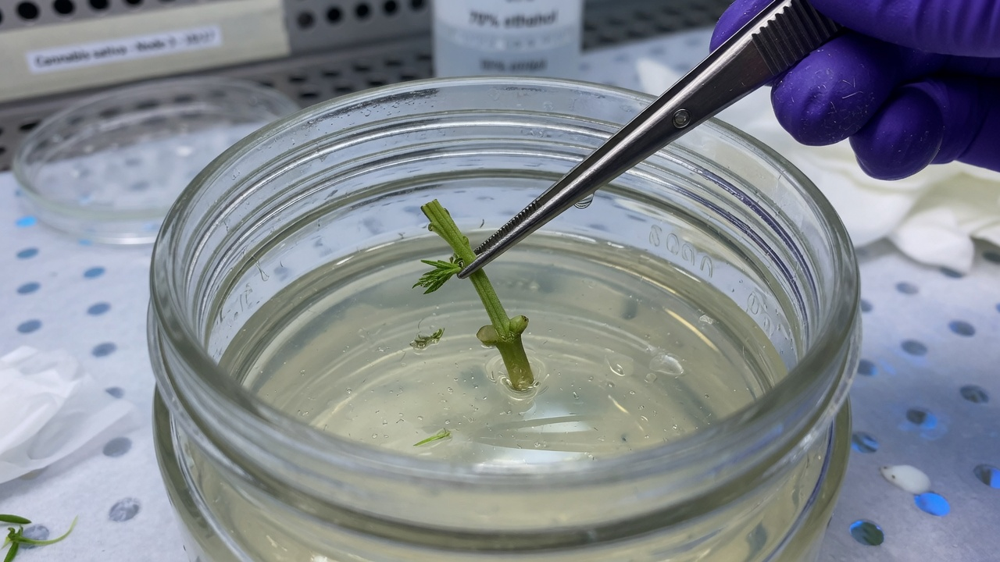
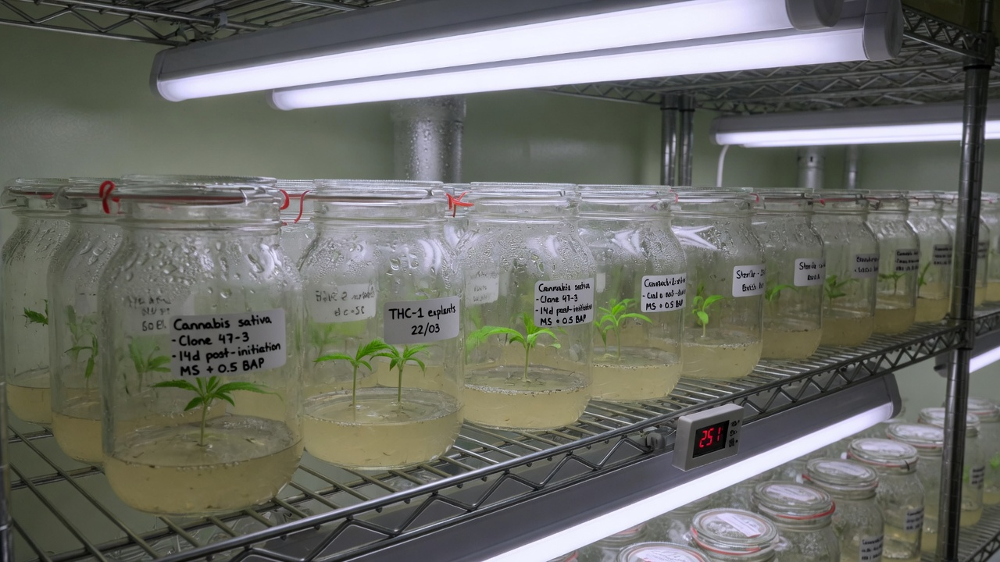
Meristem dissection for cleanup of genetics
The steps before this step are the same as the steps of usual cloning. This step removes the disease. You do not use a node of 1 cm (0.4 in). You cut only the very small meristem dome from section 5, which does not contain the viroid. Then you make your new plant from this dome.
- 1Sterilize a shoot tipSterilize the surface of a shoot tip in active growth, as in section 10.
- 2Use the microscopeUse a stereo microscope (a dissecting microscope) in the flow hood. Use needles or forceps that you sterilized. Remove the small leaves around the shoot tip, one by one. Continue until you see the shiny, transparent meristem dome.
- 3Cut the domeCut only the dome and 1–2 leaf primordia. The piece is only 0.2–0.5 mm (0.008–0.020 in) across. Put it on the initiation medium.
- 4WaitA meristem is slow and weak. The time for a meristem to become a shoot in good condition is approximately 10 weeks. For some meristems, the time is up to approximately 24 weeks. This time is much longer than the time for a node.
HpLVd removal rates for each cultivar
It is important to give accurate information here. Meristem culture can remove HpLVd, but the success rate changes very much with the cultivar. One test of 13 cultivars used meristem culture and a weak heat treatment. In this test, the treatment removed the disease fully in only 5 of 13 cultivars.[5]
- Thermotherapy is the method to keep the mother plant or the culture warm (approximately 30–36 °C / 86–97 °F) for two weeks. It decreases the viroid level. Thus you can cut a meristem with a small increase in size, and this meristem stays clean and stays in good condition more easily. If you use only thermotherapy, the result is not good each time: the levels increase again, and heat can also make mutant viroids. Thus use thermotherapy with meristem dissection. Do not use it as the only method.
- Cryotherapy is the method to freeze shoot tips in liquid nitrogen for a short time. Only the very small clean cells stay in good condition. Laboratories use it as a strong method in tests. At this time, there is no standard protocol for cannabis that tests show is correct. Put it in the group ‘advanced/future’.
The kit lets you cut the meristem. It includes no equipment for heat treatment and no DNA test. After this step, the plant is possibly clean. You are sure that the plant is clean only after a laboratory RT-qPCR test shows no viroid. The next section gives the test, and the test is mandatory.
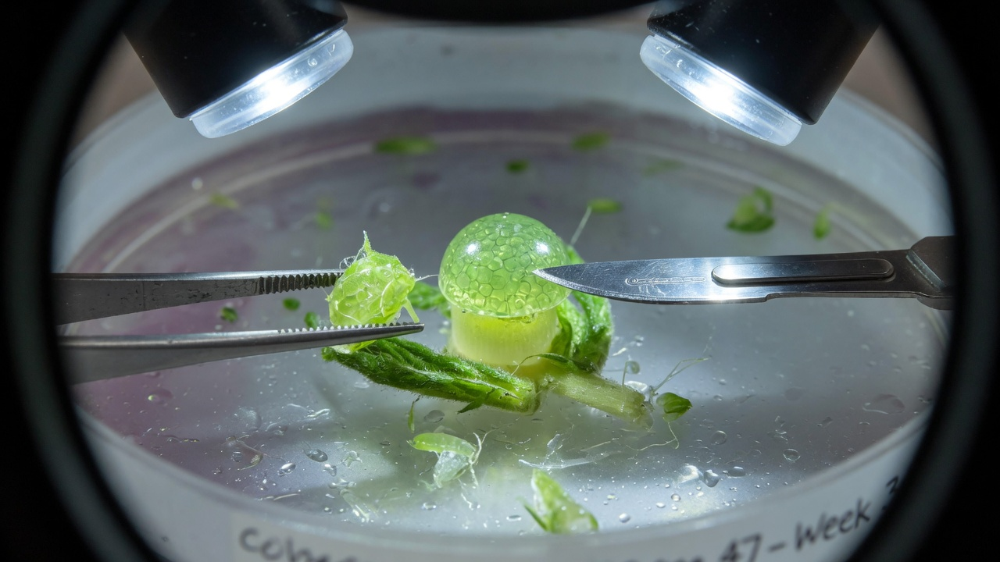
Indexing: make sure that the stock has no pathogens
A meristem plant that has no signs of a problem is not a clean plant until a laboratory test shows that the plant is clean. ‘Indexing’ is that test. If you do not do the test, you can make a ‘clean’ mother plant in six months of work. Then this mother plant can infect all the plants of your room with the viroid again, without a sign.
- HpLVd moves slowly in a new plant, and it is not in all the parts at the same time. It is in the roots after approximately 2–3 weeks and in the foliage after approximately 4–6 weeks from the infection.
- Thus do the test more than one time, on more than one tissue. Roots are the most accurate indicator in the first period. Also test leaves of different ages.
- Do a test of the plantlet. Then do the test again when the plant becomes larger, before you use it as a production mother plant. One first test that finds no viroid does not show that the plant is clean.
The suppliers of kits do not give information about this cost. Tests of HpLVd in an external laboratory show if the plant is clean. Without these tests, you do not know if the plant is clean. Include the cost of some laboratory tests for each mother plant that you want to use. The cost of the damage to a crop is much more than the cost of the tests.
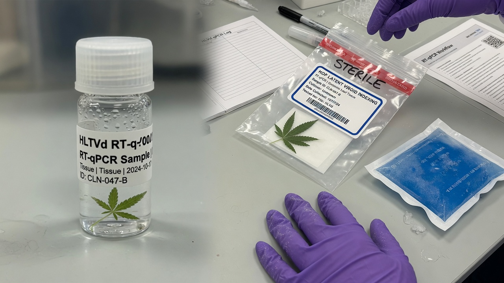
Multiplication and hyperhydricity
When you have a clean shoot in growth, multiplication makes many shoots from one shoot. You move the shoot to a medium with a cytokinin (the hormone that causes shoots). The shoot makes some new shoots. You cut the new shoots from each other and move them to new medium. Then you do these steps again. Each cycle is a subculture, approximately each 4 weeks.
You can think that more cytokinin gives more shoots. But in cannabis, some tests show the largest number of shoots, and the shoots in the best condition, on a medium without hormone. More cytokinin decreases the number of shoots and causes glassy shoots with an incorrect shape. Start with a low dose or with no hormone. Add hormone only if you must have a higher rate. (The Athena SHOOTS sachet contains the hormones, and you cannot change the doses.)
Hyperhydricity: the problem that stops multiplication
In a sealed vessel at humidity near 100%, the tissue does not make the protective structures. A plant must have these structures to stay in good condition in open air. Water saturates the tissue, and the water does not drain from the tissue. Thus the tissue does not make structures to keep its shape when you remove it from the vessel. When you move this tissue to usual air, it cannot control the quantity of water that leaves it. This problem is hyperhydricity.
The causes are too much humidity in the vessel, too much cytokinin, a soft gel with much water, and not sufficient air exchange. The corrections are easy when you know the causes:
- Use meta-topolin, and not the cytokinin BAP. Keep the cytokinin dose low or zero.
- Make the gel harder. More agar (to a maximum of 9.5 g/L) makes the medium drier, and the shoots are in better condition on it.
- Ventilate the vessels (lids with vents, or lids that let gas go through) to let humidity and ethylene flow out.
- Do the subcultures at the correct time (approximately each 4 weeks). Thus hormones and gases do not increase in the vessel.
The limit of 5 subculture cycles
Each time that you do a subculture, a small number of very small errors in the copies of DNA (mutations) occur. A new test with cannabis shows that the mutations increase in proportion to the number of subcultures. The relation between the two is almost linear. If you do too many subcultures, your ‘identical’ clones change slowly and are not the same as the initial plant.[9]
Use the cultures from one explant for a maximum of approximately 5 subcultures. Then start again from a new explant that you cleaned, or from stock in cryopreservation. This procedure keeps the traits of the cultivar in your clones.
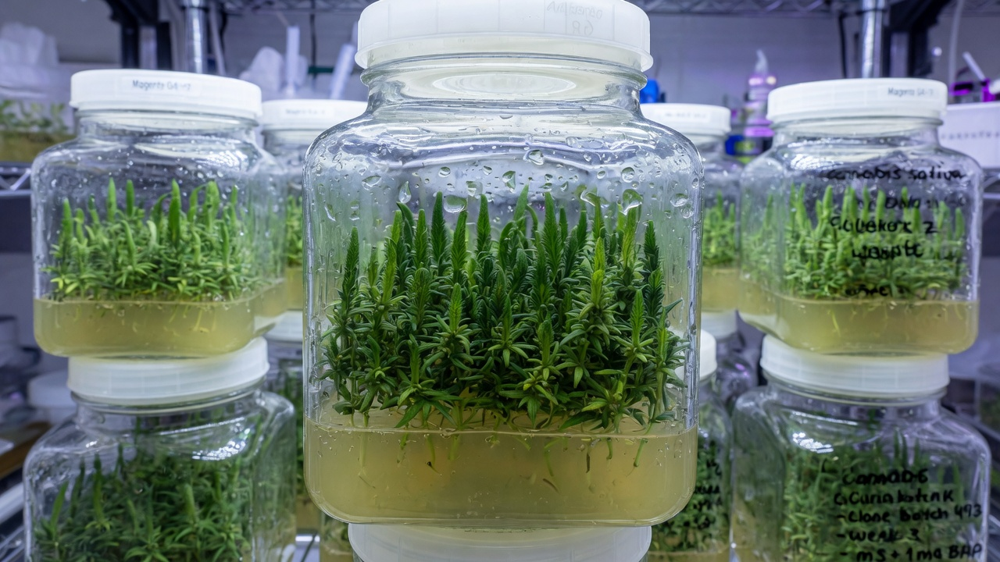
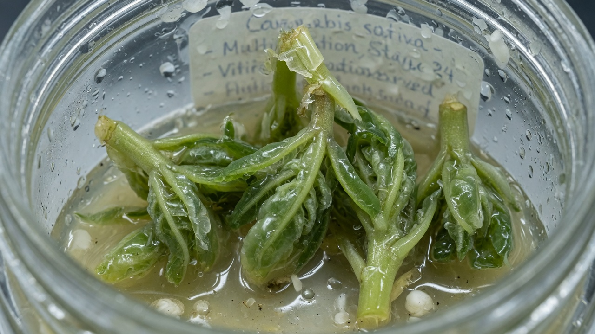
Rooting
A shoot from multiplication has no roots. Rooting gives the shoot roots with an auxin (the group of hormones that cause roots). There are two procedures. The two procedures give a good result, and the second procedure is easier for growers who are new to the work.
Move the shoots to a rooting medium that you sterilized. The medium contains MS at half strength, 3% sugar, IBA at approximately 2.5 µM (approximately 0.5 mg/L) and a small quantity of activated charcoal. Roots show by approximately week 3. The result for cannabis with the most citations is approximately 95% rooting, with approximately 5 roots for each shoot.[7]
Remove the shoot from the vessel and put the bottom end of the shoot in a rooting gel (for example, approximately 1,000–3,000 ppm IBA). Then put the shoot in a moist rockwool cube, with a humidity dome above it. Rooting and acclimatization occur together, out of the vessel. Commercial growers select this procedure because it gives better roots, higher survival and one step less with aseptic technique.[8]
- IBA is the best auxin for cannabis. It gives approximately two times the number of roots of IAA or NAA.
- The rooting substrates from best to worst are rockwool, peat and coco. Rockwool is clearly the best because it has a good balance of air and water, and it has no microbes.
- Harvest the shoots for rooting from cultures with a low age (6–12 weeks). Cultures with a higher age give a much lower success rate for rooting.
- The roots show in 2–4 weeks in vitro. For ex vitro cuttings with a dome, the roots show in 7–10 days.
The Athena ROOTS medium is a rooting medium and callus medium that Athena mixes before you get it, with the hormones in it. The procedure is the same as Procedure A, but you do not measure the components. As with the other Athena media, you cannot see the components and you cannot adjust them.
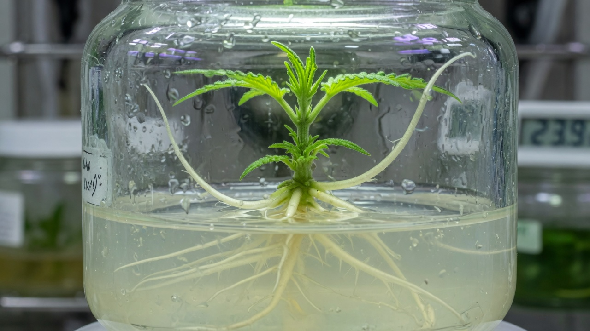
Plantlet acclimatization
Do this stage slowly. If you do it too fast, many plantlets do not stay in good condition. A plantlet from a sealed vessel is in conditions with humidity near 100%, a constant warm temperature, sugar in the medium and dim light. Its leaves did not make a correct layer of wax or stomata that operate correctly. If you put the plantlet directly in the air of the room, it shows wilt and necrosis in some hours.
- 1Put the plantlet in a potMove the plantlet with roots to a clean substrate that you sterilized. Use rockwool, or a mixture of peat and perlite (1:2), in a small pot or a plug.
- 2Put the dome on, at high humidityPut a humidity dome or a propagator on the plantlet. Keep the humidity at approximately 75–80%. At the start, keep the light low, at approximately 50 µmol/m²/s. Apply water carefully.
- 3Decrease the humidity in stepsDuring approximately 2–3 weeks, open the vents by a small quantity more each day. Decrease the humidity to approximately 55–65%. Monitor the plantlets for wilt. If the plantlets show wilt, close the vents to the previous opening.
- 4Increase the light in stepsWhen the humidity decreases, increase the light to approximately 500 µmol/m²/s, approximately ten times the first value. Thus the plant becomes strong.
- 5Remove the domeWhen the plantlet keeps turgor in open air and makes new growth, remove the dome. Then the plantlet is a usual plant.
- Desiccation: the humidity decreases too fast. The plantlet cannot close its stomata in time, and it becomes dry. Desiccation is cause number 1, thus decrease the humidity slowly.
- Hyperhydricity from Stage II: glassy shoots from a multiplication stage with too much humidity cannot acclimatize. Correct the cause in the multiplication stage (section 14).
- Damping-off: fungal rot in the substrate that is warm and wet. Use a substrate that you sterilized. Do not apply too much water.
Reports of protocols that laboratories operate correctly show 90–100% survival in acclimatization. These values are for the best conditions in a laboratory, and your first batch can have lower values. But they show that a slow and careful acclimatization gives a good result.[6]
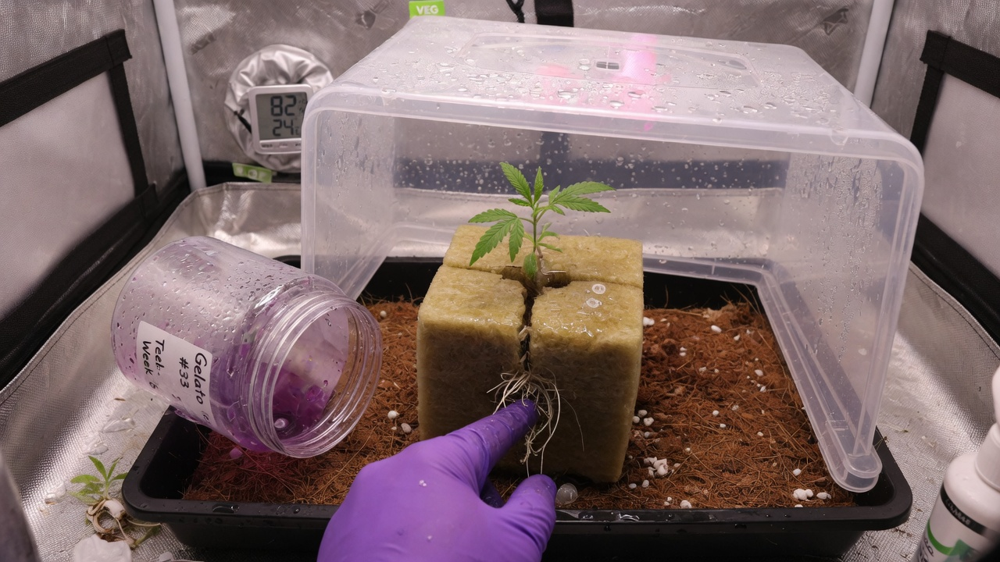
Make a new clean mother plant
You have the plantlet after acclimatization. We recommend that a laboratory test shows that the plantlet is clean. Make the plantlet larger, until it is a mother plant (stock plant). Then get cuttings from the mother plant with the usual easy method, in large quantity.
- 1Make the mother plant largerPut the clean plantlet in a larger pot. Keep the plantlet in vegetative growth with long days (18–24 h of light). Use a space that is very clean and has controlled conditions. We recommend that you keep the space away from your previous plants that possibly have the infection.
- 2Make sure that the plant is clean againDo the HpLVd test again when the plant becomes larger, before you use the plant. Only a plant with a test that finds no viroid is a ‘clean mother’.
- 3Get cuttings or retipsFrom the mother plant, get usual stem cuttings or soft ‘retips’ from the tip of a shoot. Cannabis retips make roots at 76–81% with no hormone, and at more than 90% with IBA at approximately 1,000 ppm. This method is easy and increases the quantity of clean stock quickly.
- 4Keep the mother plant cleanUse dedicated tools that you sanitized. Sanitize your hands and the surfaces between plants. Do not let a plant without a laboratory test come near the mother plant. Clean stock stays clean only if you always obey these procedures.
Tests show that mother plants from tissue culture are chemically the same as the initial plants. The cannabinoid content of plants from micropropagation, from retips and from usual cuttings was the same. Tissue culture does not change your cultivar. It gives the cultivar back to you in good condition.
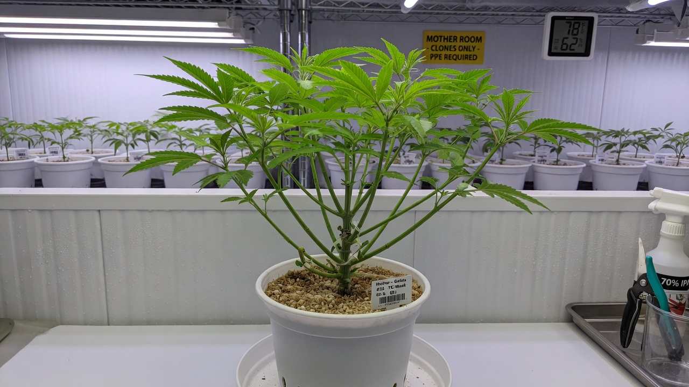
Storage of genetics: synthetic seeds and cryopreservation
When you can clean and multiply a cultivar, you can also keep the clean genotype in storage. Thus it is not necessary to clean the cultivar again. Two methods are important to know, also for a person who is new to the work. Growers use these methods more and more.
A shoot tip or a bud in a soft bead of calcium alginate gel. It is an ‘artificial seed’ that you can keep and send. Tests show that the method is correct in commercial production with cannabis: buds of ‘Slurricane’ in beads showed 100% regrowth after 150 days of storage. The method is good for storage of genetics for a short time or a medium time, and to send genetics.
You freeze very small shoot tips in liquid nitrogen (−196 °C / −321 °F) for storage with no time limit. It is the best method for long-term storage of germplasm. It also ‘resets the clock’ for the mutations of subculture from section 14. It is a correct method, but it is not easy. In cannabis protocols, approximately 55–63% of the tips show regrowth.[11]
Commercial laboratories for clean stock do all these steps in one sequence. Two examples are Conception Nurseries and Front Range Biosciences. The first steps are: test → meristem cleanup → micropropagation → check of the traits. The last steps are: storage of the best mother plants with a frozen copy → send clones or synthetic seed. The largest of these laboratories makes more than 500,000 plants each month. You do the same procedure, but in a small quantity.[10]
For a long time, cannabis was a recalcitrant species: regeneration was possible with only a small number of cultivars. A report of a 2025 protocol with cotyledonary-node explants shows a success rate of approximately 70–90% for many hemp cultivars and medicinal cultivars. It is a step to methods for all genetics. The methods continue to change quickly.
Troubleshooting
Almost all problems of growers who are new to the work are in this table. Find the symptom, correct the cause and record the result.
| Symptom | Possible cause | Correction |
|---|---|---|
| The medium is not transparent, there is slime at the bottom of the explant, and you smell a bad vapor from the vessel | Contamination with bacteria (frequently from an endophyte in the mother plant) | Discard the vessel. Make the condition of the mother plant better, and prepare the plant before you cut a piece. You can add PPM to the medium. Obey the aseptic technique more carefully. |
| White fungal growth, or fungal growth with a color, on the medium. The growth increases in size. | Fungal contamination (airborne spores) | Discard the vessel immediately, before the contamination moves to other vessels. The cause is the air or your method. Do a check of your clean-air setup and of the sterilization of the tools. |
| The cultures showed no problem for 2 weeks. Then they suddenly changed to an unsatisfactory condition. | A latent endophyte that increases quickly on a medium with many nutrients | Wait and monitor the cultures. Start with mother tissue in better condition, to which you applied a treatment before you cut the explants. Use smaller and newer explants. |
| The explant becomes brown and has necrosis | Oxidation of phenolic compounds (browning) | Add activated charcoal (approximately 1 g/L). Put the explant in an antioxidant liquid for a short time. Move the explant to new medium after a short time, and do this again frequently. |
| The shoots are glassy, larger than usual and full of water, and they break easily | Hyperhydricity (vitrification) | Decrease the cytokinin or remove it. Make the gel harder (more agar). Ventilate the vessels. Do the subcultures at the correct time. |
| A small number of new shoots, or no new shoots, in multiplication | Too much hormone, or this cultivar gives a low rate with this medium | Try a medium without hormone, or with less cytokinin. Know that the rate changes with the cultivar. |
| The shoots do not make roots | The auxin is incorrect or not sufficient, or the age of the culture is too high | Use IBA at approximately 2.5 µM. Harvest shoots from cultures with a low age (6–12 weeks). Try the ex vitro procedure ‘dip and plant’. |
| The plantlets show wilt and necrosis when you move them to soil | Acclimatization that is too fast (desiccation) | Decrease the humidity in steps, more slowly, during 2–3 weeks. Keep the dome on for a longer time. Make sure that the plantlet has good roots first. |
| A plant that you cleaned has HpLVd in the test result | The meristem is too large, or the cultivar is not easy to clean | Cut a smaller dome. Clean some meristems of each cultivar. You can add thermotherapy. Always do the indexing test again. |
| The clones change with time and are not the same as the initial plant | Too many subcultures (increase of mutations) | Start again from new stock or stock in cryopreservation, by approximately 5 subcultures. |
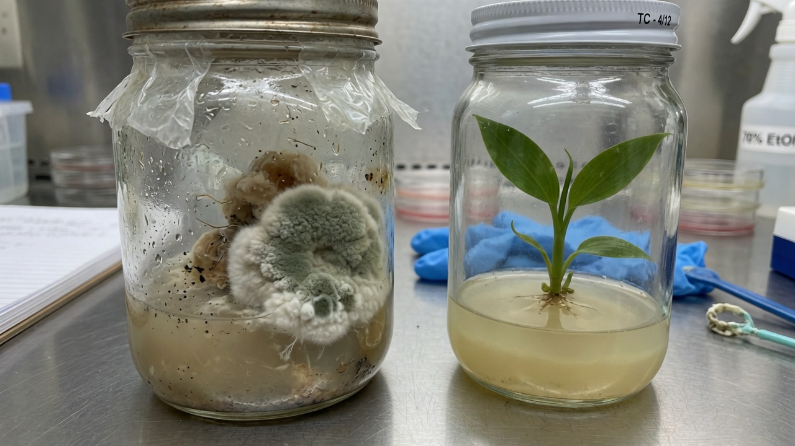
Expected results and limitations
Use these values to know the results that are possible before you start.
Success rates: the best values in reports and the first batch of a new grower
| Stage | Best value in a laboratory | First batches of new growers |
|---|---|---|
| Survival at initiation | a maximum of approximately 55% | frequently much lower. Reports show that 90–95% of the explants do not stay in good condition, and the result is usual. |
| Rooting | 95–100% | lower, but it increases in the next batches |
| Survival in acclimatization | 90–100% | lower in the first batches |
| HpLVd removal (for each cultivar) | 0–100% (average approximately 40%) | the rate changes very much with the cultivar. Clean more than one meristem, and test all of them. |
Costs
| Alternative | At the start | During use |
|---|---|---|
| DIY start (still-air box and pressure cooker) | approximately $200–$550 | Media powder, bleach, agar and gel. The cost is low. |
| Larger laboratory for a hobby grower | less than approximately $1,000 | Consumables. A flow hood is optional and you can add it after the start. |
| Athena Culture Kit | approximately $1,800–$2,295 | Media $30–$40 for each box, vessels $15 for each vessel, HEPA $100 |
| HpLVd laboratory tests (necessary) | cost for each sample | Some tests for each mother plant that you want to use. Add this cost to the total. |
- A plant without the viroid is not resistant to the viroid. A dirty tool or hand can infect a clean plant again immediately. You must always do the hygiene procedures.
- A kit can clean the plant, but it cannot show that the plant is clean. The kit has no qPCR test, thus it gives no result that shows ‘clean’. Tests in an external laboratory are mandatory, not optional.
- The result changes with the cultivar, and the procedure is slow. For some genetics, the removal of the viroid is very low. The time to make a mother plant that tests show is clean is many months.
- You cannot see the components of the media. Kits give media that are mixed before you get them. The media are easy to use. But you cannot adjust the media, and it is not easy to find the cause of a problem. Many growers use the media without a problem. It is a limit if you want to make the media better.
Tissue culture is the only method that gives a good result to remove Hop Latent Viroid and other diseases from a cannabis cultivar. Then the genetics can give the correct performance. A hobby grower can do tissue culture, and a kit makes the work easy. The biology is correct, if you obey aseptic technique, do the acclimatization slowly and show your results with a laboratory test. Do not accept ‘the plant has no signs of a problem’ without a test.
References
- Atallah OO et al. (2023). Hop latent viroid: a hidden threat to the cannabis industry. Viruses / PMC. https://pmc.ncbi.nlm.nih.gov/articles/PMC10053334/
- Transmission, spread, longevity and management of hop latent viroid in cannabis in North America (2025). PMC. https://pmc.ncbi.nlm.nih.gov/articles/PMC11902214/
- Holmes JE et al. (2021). Variables affecting shoot growth and plantlet recovery in tissue cultures of drug-type Cannabis sativa L. Frontiers in Plant Science, 12:732344. https://pmc.ncbi.nlm.nih.gov/articles/PMC8491305/
- Adhikary D et al. (2024). Importance of media composition and explant type in Cannabis sativa tissue culture. Plants (MDPI). https://pmc.ncbi.nlm.nih.gov/articles/PMC11434680/
- Differential gene expression after HpLVd eradication therapy in micropropagation tissue culture (2024–25). bioRxiv / Plant Cell Tiss. Organ Cult. https://www.biorxiv.org/content/10.1101/2024.04.06.588422v1
- Page SRG et al. (2019). Back to the roots: protocol for the photoautotrophic micropropagation of medicinal Cannabis. Plant Methods, 15:54. https://pmc.ncbi.nlm.nih.gov/articles/PMC6660493/
- Mestinšek Mubi Š et al. (2022). An alternative in vitro propagation protocol of Cannabis sativa L. presenting efficient rooting, for commercial production. Plants. https://pmc.ncbi.nlm.nih.gov/articles/PMC9146626/
- Kurtz LE et al. (2022). Ex vitro rooting of Cannabis sativa microcuttings and their performance compared to retip and stem cuttings. HortScience, 57(12):1576. https://journals.ashs.org/hortsci/view/journals/hortsci/57/12/article-p1576.xml
- Torkamaneh D et al. (2024). Somatic mutation accumulation in micropropagated cannabis is proportional to the number of subcultures. Plants, 13(14):1910. https://pmc.ncbi.nlm.nih.gov/articles/PMC11279941/
- A temporary immersion system to improve Cannabis sativa micropropagation (2022). Frontiers in Plant Science. https://www.frontiersin.org/articles/10.3389/fpls.2022.895971/full
- Cryopreservation of shoot tips of elite cultivars of Cannabis sativa L. by droplet vitrification (2019). Medical Cannabis and Cannabinoids (Karger). https://pmc.ncbi.nlm.nih.gov/articles/PMC8489323/
- Athena Ag, Culture Kit, ROOTS/SHOOTS media, and Plant/Media/Lab Prep procedure (manufacturer documentation). (source not from a journal, for example from a manufacturer) https://www.athenaag.com/culture-kit
Each citation in the paper, for example [1], refers to an item in this list. Each item is a primary source or an instruction from an authority, unless the item shows a different type. The results of cannabis tissue culture change much with the genotype. Before you use the dilutions, hormone doses and local regulations, make sure that they agree with the primary sources.